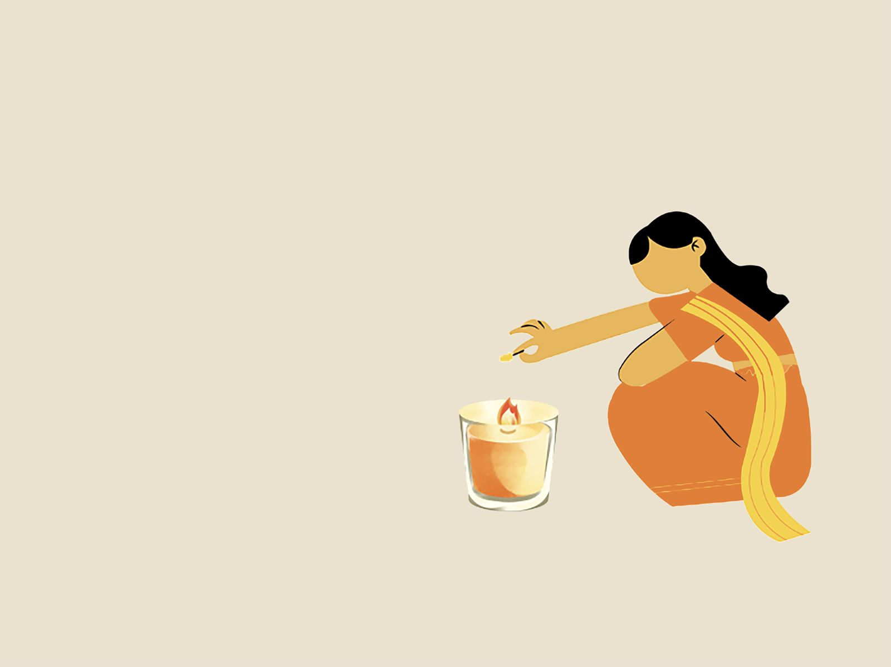

捐赠
你的捐赠将支持我们消除针对海外亚裔女性的歧视和性别暴力，促进她们的赋能与发展。
你在哪个国家捐赠？
AWDPI 在以下每个国家都有独立注册的机构。你的捐赠由所选国家的机构以当地货币接收。
- US美国AWDPI United States · USD · 你所在地区即将开放
- UK英国AWDPI United Kingdom · GBP · 你所在地区即将开放
- BE比利时AWDPI Belgium · EUR · 你所在地区即将开放
- AU澳大利亚AWDPI Australia · AUD · 你所在地区即将开放
以企业或基金会身份资助？ 请写信至 contact@awdpi.org

想找人聊聊？
在微信上添加 Avoice 女性保护小助手，备注你所在的国家和称呼，昵称也可以。如果你正处于危险之中，请先拨打当地紧急电话。